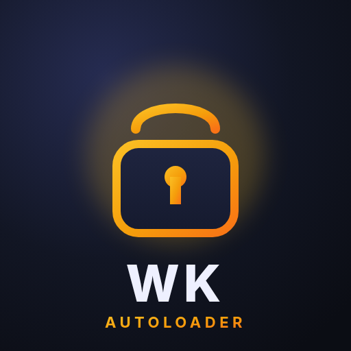

WK Autoloader Store turns the PS5 Store tile into WK Autoloader. Open the Store icon, start the jailbreak (Relapse), and Elf Launcher opens when it finishes.
Download v1.1.5 Source on GitHub9021WK_Autoloader_Store_V1.1.5.elf to elfldr on port 9021.The tile works offline after install; you only send the ELF again to reinstall or update. Each install clears the old WebKit cache first, so the cache is always filled from scratch.
Send WK_Autoloader_Store_Restore_V1.1.5.elf to elfldr on port 9021, then reboot. This also clears the WK cache.